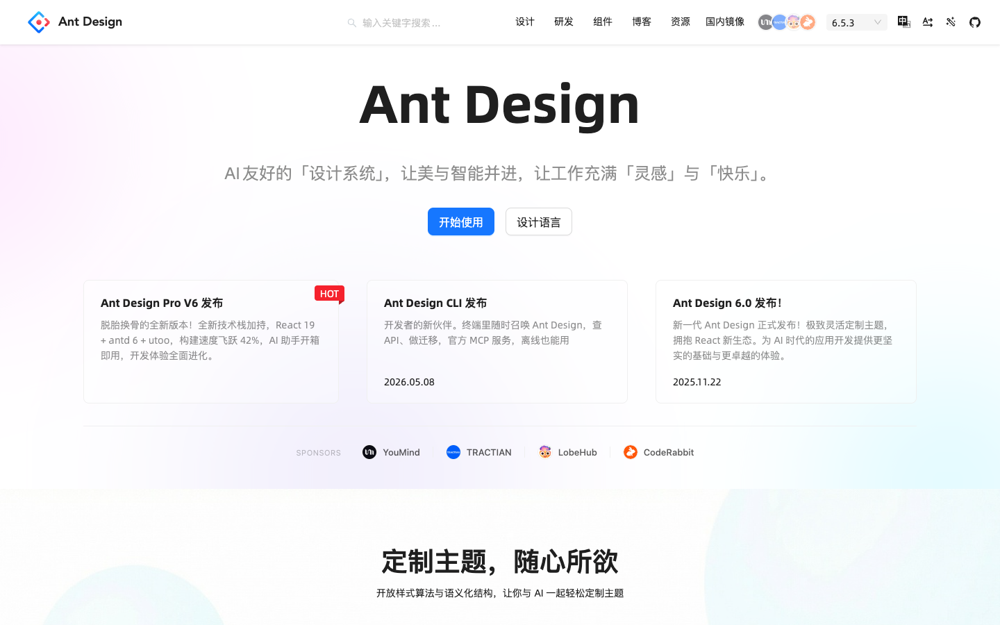
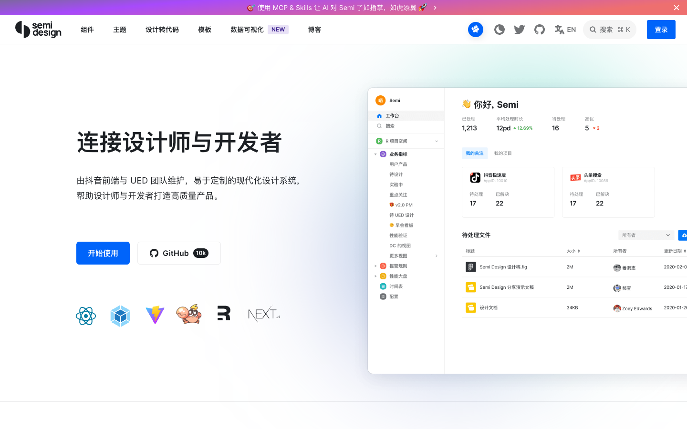
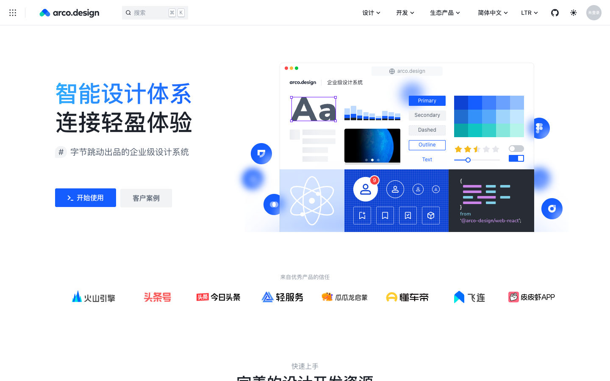
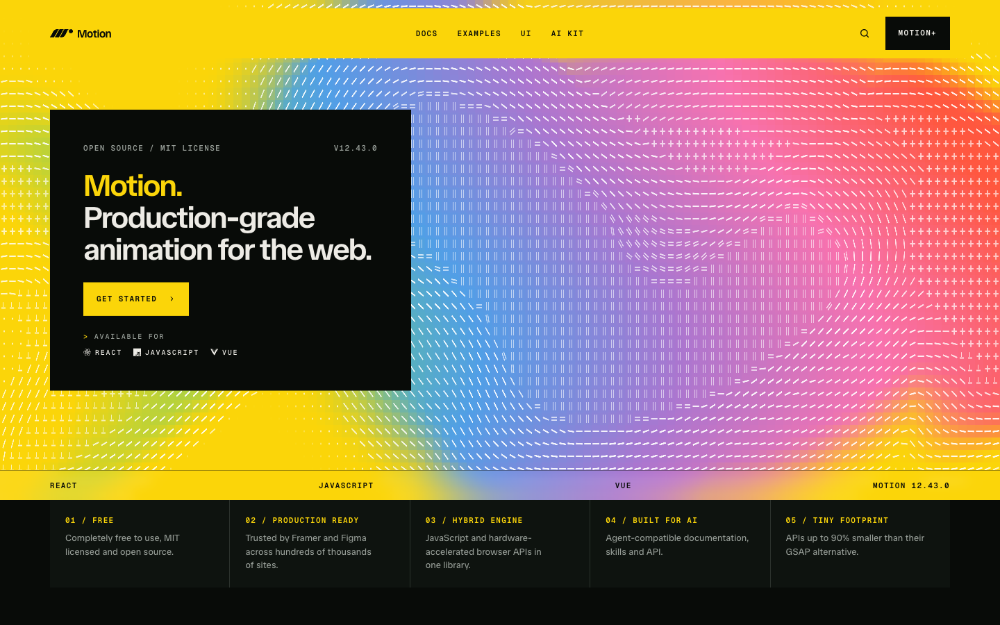
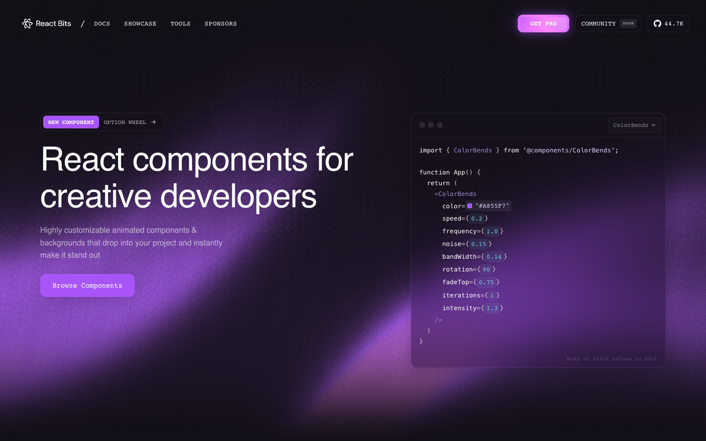
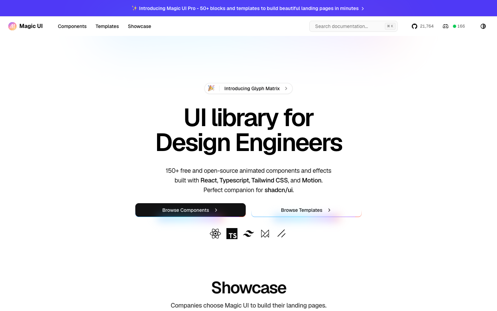
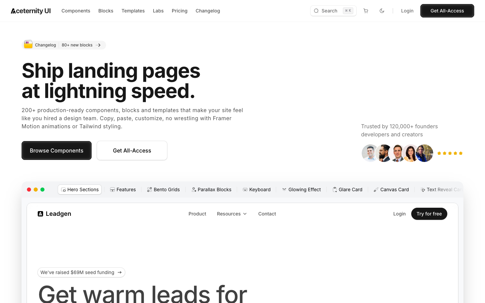
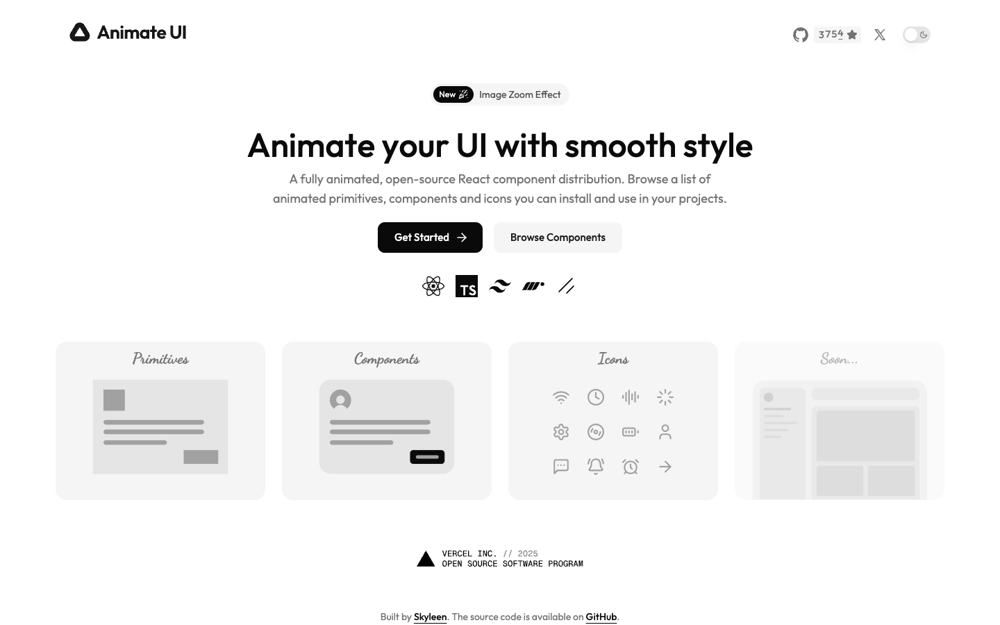

常州夜宵 004 · 第一课
纯前端
Vibe Coding
不用先学会写代码，也可以开始创造。
方向键翻页 · F 全屏 · O 目录 · N 讲师备注
01 · 今天的任务
今天不是来背代码的
把你脑海中的一个页面，变成浏览器里真正可以打开的作品。
提出想法→
描述需求→
AI 生成→
浏览器查看→
继续修改
AI 帮你写代码；创意、选择和验收仍然属于你。
02 · Web 的三种基础材料
浏览器最终只认识三样东西

HTML
房子的结构
决定页面里有什么

CSS
房子的装修
决定颜色、间距和排版

JavaScript
电器和机关
决定点击以后发生什么
03 · 三层能力
同一个页面，可以不断升级
1
只有 HTML
学习网站
有内容，但比较朴素
2
加入 CSS
✦ 学习网站
开始有颜色、层次和设计感
3
加入 JavaScript
现在可以响应你的操作
04 · 为什么需要框架
框架是为了管理复杂度
页面越复杂，
重复和关联就越多。
个人导航页
搜索框
分类菜单
网站卡片 × 20
设置弹窗
React、Vue 和 Angular 帮我们把复杂页面拆成可以重复使用的“乐高零件”。
05 · 现代前端地图
现代前端是一套组合，不是一个工具
用户看到的产品页面与交互
组件库按钮 · 卡片 · 弹窗
前端框架React · Vue · Angular
Web 基础HTML · CSS · JavaScript
开发工具Node.js · npm · Vite
无论使用什么框架，最终都要变成浏览器能够理解的 HTML、CSS 和 JavaScript。
06 · React / Vue / Angular
没有最好的框架，只有更合适的路线
 React
React自由组合的 UI 积木
VVue
清楚、渐进的学习路线
AAngular
规范完整的工程体系
07 · 开发工具链
Node.js 不负责画页面
npm run dev＝ 启动项目，打开开发预览
08 · 装修材料与成品家具
CSS 工具和组件库不是一回事
✎原生 CSS自己设计和装修
 Tailwind CSS
Tailwind CSS一盒样式积木
BBootstrap带基础风格的成套零件
组件库按钮、表单、弹窗等成品家具
⌘shadcn/ui把家具源码交给你
Tailwind 主要控制样式；组件库同时提供外观和交互。
09 · 国内企业组件生态
大厂组件库让产品快速达到“可用”

Ant Design · 蚂蚁

 Semi Design · 字节
Semi Design · 字节

Arco Design · 字节
它们主要解决“完整、统一、可靠”，不等于动画特别酷炫。
10 · React 动画生态
动画库负责让组件“动起来”
CSS简单悬停
Motion进出、拖拽、布局变化
AutoAnimate列表新增、删除、排序
GSAP复杂时间线与滚动叙事
Rive / Three互动插画与三维场景

本课默认：Motion
<motion.div whileHover={{ scale: 1.03 }} />
11 · 创意组件灵感展厅
酷炫组件可以成为作品的视觉亮点

React Bits动态背景 · 文字 · 鼠标效果

Magic UIBento · Dock · 光束 · 粒子

Aceternity UI3D 卡片 · 视差 · 聚光灯
一套基础组件 + 一个动画方案 + 最多两个视觉亮点
12 · 统一技术路线
本课只走一条简单路线
React组织组件
+
 Vite启动项目
+
Tailwind完成样式
+
Motion加入动画
Vite启动项目
+
Tailwind完成样式
+
Motion加入动画
按需加入shadcn/ui或一个酷炫视觉组件
这只是本课程选择的一条路线，不代表所有网站都必须这样做。
13 · 教师现场示范
把一句想法变成页面
第一轮：先把页面做出来
使用 React、Vite 和 Tailwind CSS 创建一个个人导航页。顶部显示标题和搜索框，下面按照学习、工作、娱乐三个分类展示网站卡片。整体使用简洁的浅色风格，暂时不使用后端。
第二轮：再增加动画和个性
保留现有结构和功能，使用 Motion 为卡片增加依次进入、悬停和点击反馈。再加入一个低强度动态背景，确保文字清楚、手机端可用。
生成→运行→观察→只改一件事
14 · 现在轮到你
自由创作
40 分钟
- 一个标题和搜索框
- 至少三个导航分类
- 每类至少三个网站入口
- 所有链接能够打开
- 至少完成两轮主动修改
40:00
选择一种增强方向：
产品风酷炫风独立站风企业风
15 · 创作方向
不知道做什么？先选择一个主题
学习导航课程 · 工具 · AI 网站
工作首页邮箱 · 文档 · 项目
设计师首页灵感 · 配色 · 字体
旅行首页地图 · 酒店 · 行程
赛博朋克深色 · 霓虹 · 动态
治愈系柔和 · 插画 · 每日一句
没有唯一标准答案。主题越具体，AI 越容易做出有个性的页面。
16 · 提示词不是咒语
让 AI 听懂你的四个问题
- 01我要做什么？产品与使用者
- 02页面里有什么？区域与内容
- 03希望它长什么样？风格、颜色与布局
- 04用户可以做什么？点击、搜索与切换
“做一个治愈系个人导航页：米白背景、浅绿和橙色强调、圆润卡片；包含问候语、搜索框和三个分类；点击卡片在新标签页打开。”
17 · 验收比生成更重要
完成第一版后，检查这六件事
01页面能打开没有空白页和报错
02链接能使用搜索和网站入口正确
03文字看得清颜色和背景有足够对比
04手机端可用没有明显错位和横向滚动
05动画不打扰不影响阅读和点击
06完成两轮修改作品体现你的主动选择
出现问题时交给 AI：截图 + 完整错误 + 期望效果 + 不能修改的内容
18 · 展示与互评
作品展示：没有唯一正确答案
1你做的是什么主题？
2你主动要求 AI 修改了什么？
3下一步你还想增加什么？
创意是否鲜明页面是否易用视觉是否统一哪个细节值得借鉴
19 · 第一个版本完成
今天，你已经开始创造
今天可运行的个人导航页
→
下一步部署为公开独立站
→
再下一步Chrome / Edge 新标签页插件
Vibe Coding 不是让 AI 替你做决定，而是让你把更多精力放在想法、选择和迭代上。
按 A 进入附录 · 按 O 打开目录
APPENDIX
组件与动画生态地图
主课不讲完，需要时回来查。
蚂蚁 / 阿里字节跳动React 动画酷炫组件选型地图资源链接
附录 A · 企业组件
蚂蚁与阿里组件生态
Ant Design
企业级 React 设计系统
- 表格、表单、菜单、弹窗
- 企业后台和数据产品
- 官方提供 AI Agent 文档
X
Ant Design X
面向 AI 产品的界面方案
- Bubble、Sender、Prompts
- 引用、流式 Markdown、文件卡片
- 适合 AI 助手和知识问答

Fusion Design
阿里企业设计体系
- 企业中后台
- 品牌主题定制
- React 组件方案 Fusion Next
附录 B · 企业组件
字节跳动组件生态
Semi Design抖音前端与设计团队
现代企业应用 · SaaS · 深色模式 · 国际化@douyinfe/semi-ui
Arco DesignGIP UED 与基础架构前端团队
React / Vue · 主题实验室 · 物料市场 · Arco Pro@arco-design/web-react
IconPark两千多个可定制图标
让导航页图标保持统一风格@icon-park/react
附录 C · 动画选型
React 动画：从简单到专业
MotionUI 动画首选进出 · 手势 · 拖拽 · 布局 · 滚动
AutoAnimate零配置列表新增 · 删除 · 排序
GSAP专业时间线滚动叙事 · SVG · Canvas · 3D
React Spring物理运动回弹 · 重量感 · 自然过渡
Lottie / Rive设计动画加载 · 插画 · 互动吉祥物
React Three Fiber三维网页3D 地球 · 模型 · 粒子
第一课：CSS + Motion 足够；GSAP 和 3D 留到进阶。
附录 D · 视觉灵感
酷炫 React 组件集合
React BitsAurora、动态文字、Spotlight Card、鼠标特效
Magic UIBento Grid、Dock、Magic Card、光束和粒子
Aceternity UI3D Card、Spotlight、Hero Parallax、动态边框
Animate UITailwind + Motion + shadcn Registry 的开放动画组件
shadcn/ui负责可靠的基础产品组件，不以炫技动画为核心

Animate UI：开放、可修改、动画优先
附录 E · 快速选择
想做这种页面，应该选什么？
企业后台Ant Design / Semi / Arco少量 Motion
AI 聊天产品Ant Design XMotion
极简导航shadcn/uiMotion
酷炫导航shadcn/uiReact Bits + Motion
SaaS 独立站shadcn/uiMagic UI + Motion
科技产品首页自定义组件Aceternity / GSAP
不要同时引入多套完整组件库：风格会冲突，依赖和调试成本也会增加。
附录 F · 资源链接
继续探索这些官方资源
页面截图来自各项目官方网站；技术 Logo 来自 Simple Icons，仅用于课堂识别与教学展示。
 Node.js
Node.js